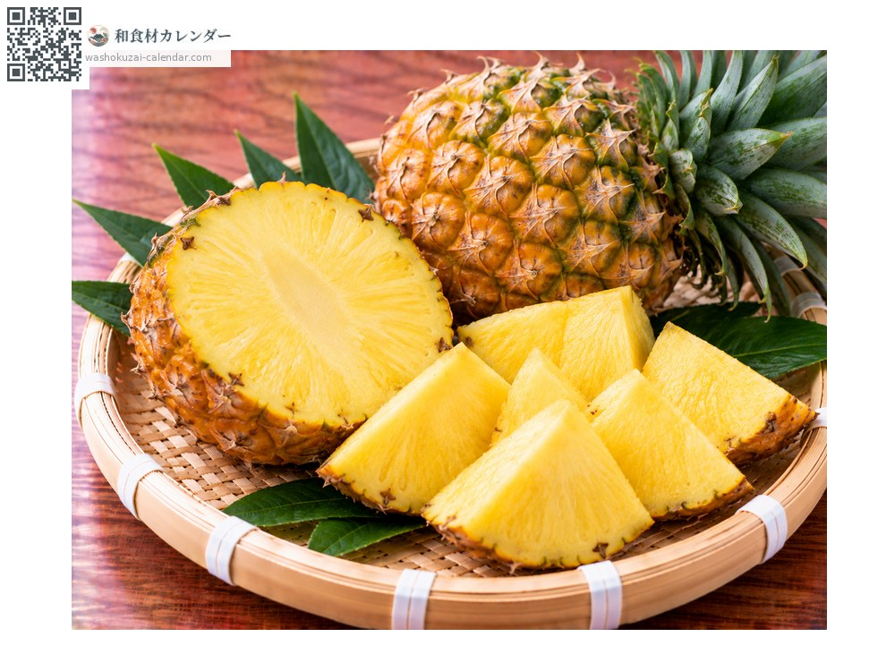
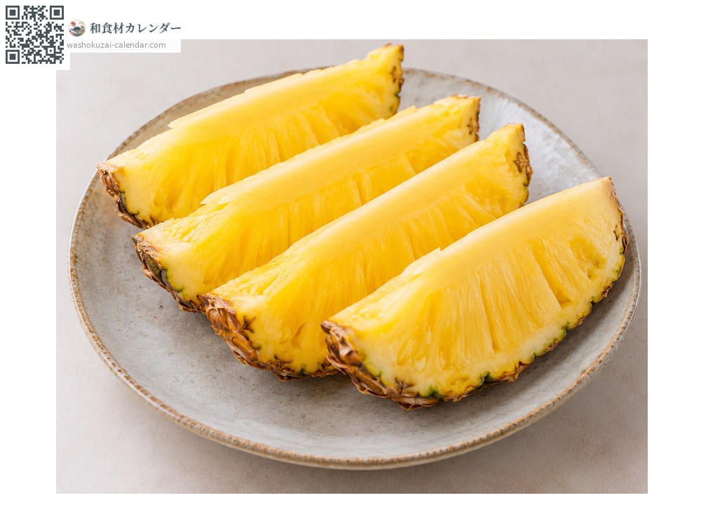
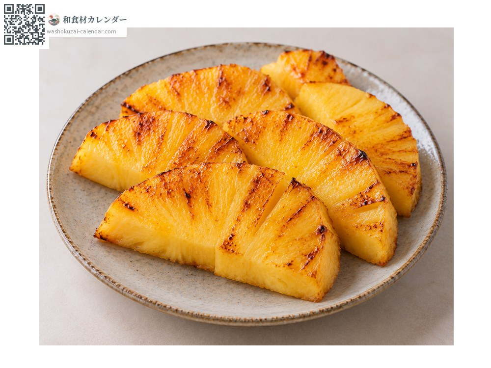
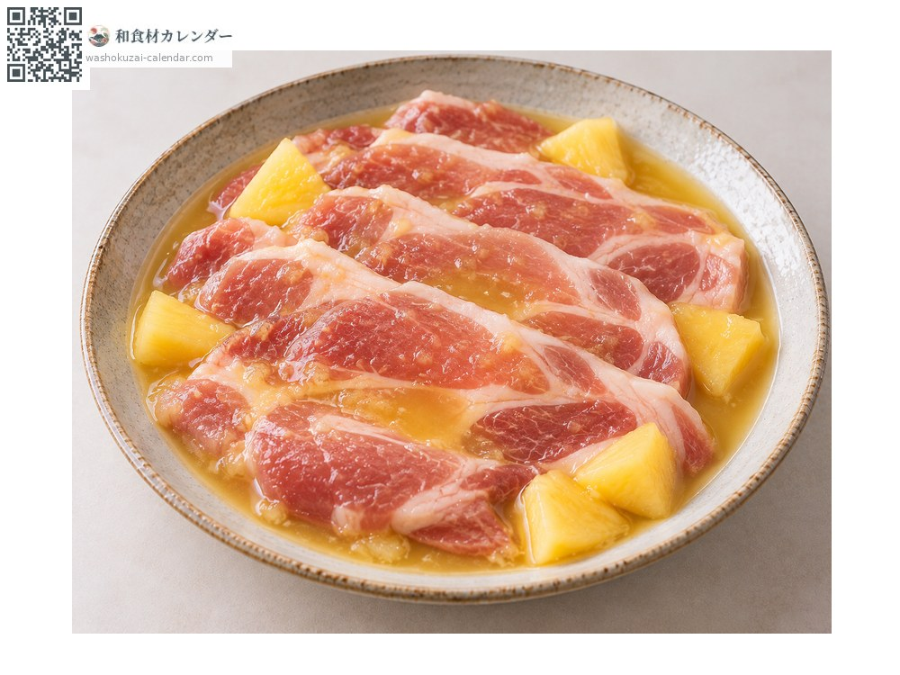

パイナップル ぱいなっぷる
At its best in May, Jun, Jul

In seasonAvailable

Cut lengthways with the core left in; some varieties have a core tender enough to eat.

Lightly grilled to deepen the sweetness. Also good alongside meat.

Meat steeped in the juice softens, through the action of its enzymes.
Deep green leaves and a plump base, with a sweet aroma.
Store at room temperature. Once cut, seal and refrigerate, using within two or three days.
Japanese pineapple comes almost entirely from Okinawa. Among them the peach pine has white flesh and a scent like peach, which is how it got its name. Low in acidity, and tender right through the core.